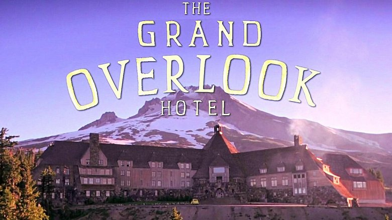

Horror Movies
Home
Classics
Of course, I love the classic horror movies. The best of the genre. These are just an example of the movies that I can remember off the top of my head.
Some of the ones I like:
- The Shining
- Whatever Happened to Baby Jane?
- The Thing
- The Silence of the Lambs
- The Exorcist
- Scream


I especially like Scream because it has elements of comedy. I like to make my friends watch Scream and then Scary Movie right after because you can see the comedy of what exactly they're parodying (see Comedy films)
B movies:
These movies are objectively not good. But that makes them fun to watch. Shitty horror movies about the weirdest thing. I like watching bad movies as entertainment with people. Some don't think these are funny at all. Low-budget films are usually much more interesting and unique than the expensive big pictures.
This leads me to my next point;
Troma
Troma is an independant film studio created by Lloyd Kaufman in 1974. They make and produce low-budget independant films. They're usually horror-comedy films.
Lloyd Kaufman
"Many of them play on 1950s horror with elements of farce, parody, gore, and splatter." The movies they make themselves often take place in their own made up town of Tromaville, NJ. A lot of these movies play on the grotesque, dark sides of life in a mocking violent way. Many of their movies take place in the same universe and overlap.
Troma also has produced hundreds of movies for independant artists over the years. For example, the creators of South Park, Trey Parker and Matt Stone had a movie produced by Troma before the fame of their show. It's called Cannibal: The Musical.
A list of (most of) the movies that take place in the "Tromaverse":
- The Toxic Avenger
- Class of Nike'Em High
- Troma's War
- The Toxic Avenger Part II
- The Toxic Avenger Part III: The Last Temptation of Toxie
- Sgt. Kabukiman N.Y.P.D.
- Class of Nuke'Em High 2: Subhumanoid Meltdown
- Class of Nuke ’Em High 3: The Good, the Bad and the Subhumanoid
- Tromeo & Juliet
- Toxic Crusaders The Movie
- Citizen Toxie: The Toxic Avenger IV
- Poultrygeist: Night of the Chicken Dead
- Return to Nuke ’Em High Volume 1
- Return to… Return to Nuke ’Em High aka Vol. 2
- A Nymphoid Barbarian in Dinosaur Hell

Fun Fact:
Almost all of the troma films feature the same car crash scene. Filmed for one movie a long time ago, they reuse the same exact scene each time. Not being able to afford another one. They also use the same explosion over and over.